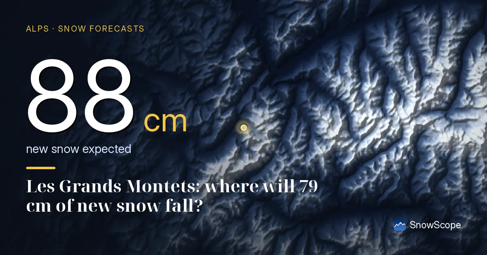

Les Grands Montets: how much snow is coming? 73–79 cm by 18 November
How much snow is coming in the Alps, and where? Mixed rain and snow: snow is expected only up high, about 76–88 cm near the top of Courmayeur (2,749 m), with rain below about 2,080 m. Until 18 November the forecast gives 76–88 cm at Courmayeur, 73–79 cm at Les Grands Montets and 78 cm at La Thuile ski, with less certainty the further out you go. Resort values: modelled, area-wide. Station values: measured, one point. Read them together. Satellites never get tired, but they do get clouds.
See the live snow forecast for Les Grands Montets in the SnowScope appSnow depth, powder alerts and the 3D map, free.
Depth today, by the numbers
Top of this list: Orelle, about 81 cm up high. Then Les Arcs 41 cm and Les Grands Montets 39 cm.
The snow map in the Alps shows 63,570 km² of white ground today and snow at 851 of 1,178 resorts.
| Resort | Snow depth | New snow, 72 h | Coming, next days | Top |
|---|---|---|---|---|
| Courmayeur | 28 cm | 19 cm | 88 cm | 2,749 m |
| Les Grands Montets | 39 cm | 16 cm | 79 cm | 2,768 m |
| La Thuile ski | 36 cm | 15 cm | 78 cm | 2,608 m |
| Les Arcs | 41 cm | 17 cm | 77 cm | 3,205 m |
| Orelle | 81 cm | 27 cm | 77 cm | 3,221 m |

The snow still to come
Up to 79 cm of new snow is forecast at Les Grands Montets over the next days.
Forecasts move: the timing is usually more reliable than the totals, so check again two days before you go.
At about 2,001 m, Les Grands Montets has 15 cm today; a normal 15 November has 19 cm there.
That is more than in 17 of the 46 past winters on this date.
In past winters the best snow at Les Grands Montets usually came late February / early March.
Day by day at Les Grands Montets: Sunday 15 November 12 cm; Monday 16 November 11 cm; Tuesday 17 November 38 cm; Wednesday 18 November 30 cm.
Height by height at Les Grands Montets: 1,234 m 0 cm on the ground, 4 cm more in the next 7 days; 2,001 m 4 cm on the ground, 73 cm more in the next 7 days; 2,768 m 28 cm on the ground, 114 cm more in the next 7 days.
The forecast in short
Forecast to 18 November: 77 cm at Les Arcs and 77 cm at Orelle. Treat the later days with care.
Snow-covered area: 75,850 km² on 13 November, 63,570 km² today, 59,240 km² forecast for 18 November. The map is getting less white.
By height and slope
On 17 November the freezing level at Courmayeur sits at 2,310 m to 3,030 m, over the top of the resort (2,749 m): rain or wet snow could fall on all slopes.
Les Grands Montets, 17 November: freezing level 2,370 m to 3,010 m, above the top (2,768 m). Rain or wet snow is possible on every slope.
On 17 November the freezing level at La Thuile ski sits at 2,310 m to 3,080 m, over the top of the resort (2,608 m): rain or wet snow could fall on all slopes.
Three heights at Courmayeur, three numbers: 20 cm at the top (2,749 m), 2 cm at mid-mountain (1,976 m), 1 cm at the base (1,204 m).
Avalanche danger and safety
Forecasts a few days ahead can change: look at the map again the day before you travel.
Tips for skiers
- Forecasts a few days ahead can change: look at the map again the day before you travel.
- When the melting line sits above the resort, the snow turns wet. The highest lifts are the safe bet.
- The best powder lasts a morning, not a week. Go early, before the sun and the crowds get to it.
- Before you ski off-piste or go touring, read the official avalanche bulletin (links below).
- Get a powder alert in the SnowScope app to know when Courmayeur gets fresh snow.
About these numbers
Resort snow depths are the deepest snow on the resort's upper slopes from the SnowScope snow model (about 1 km, run of 15 November); they are estimates for an area, not a measurement at one point. Station values are measurements on the date shown. Forecasts can change. Always read the official avalanche bulletin before going off-piste.
Official avalanche bulletins: Météo-France BERA
Cite this report
For research, teaching or the press: the numbers and charts are free to reuse under CC BY 4.0 with this citation.
SnowScope (2026), Les Grands Montets: how much snow is coming? 73–79 cm by 18 November, https://snowscope.app/blog/en/2026/11/alps-les-grands-montets-snow-forecast-15-november-2026.html, accessed 2026-11-15
SnowScope (Atlas Labs). (2026, November 15). Les Grands Montets: how much snow is coming? 73–79 cm by 18 November. SnowScope snow reports. https://snowscope.app/blog/en/2026/11/alps-les-grands-montets-snow-forecast-15-november-2026.html
BibTeX
@misc{snowscope2026alpslesgrandsmontetssnow,
author = {{SnowScope (Atlas Labs)}},
title = {Les Grands Montets: how much snow is coming? 73–79 cm by 18 November},
year = {2026},
month = nov,
howpublished = {\url{https://snowscope.app/blog/en/2026/11/alps-les-grands-montets-snow-forecast-15-november-2026.html}},
note = {Published 2026-11-15 17:59 UTC; accessed 2026-11-15}
}· CC BY 4.0 · Methods, data and tools →
Les Grands Montets: snow and temperature by height, this winter vs last (tools) →
Follow Les Grands Montets
Free: a message when fresh snow is coming, and the forecast every morning.
More snow reports

Les Grands Montets saw 74 cm of new snow in the last 72 hours, with more forecast for the coming days, according to our model on November 17, 2026.

Mild day in Italy: the snow retreats to 2,000 m. Snow cover, new snow, resorts and the days ahead in Italy on 17 November.

France or Switzerland? Where the snow is better on 16 November. Snow cover, new snow, resorts and the days ahead in France on 16 November.